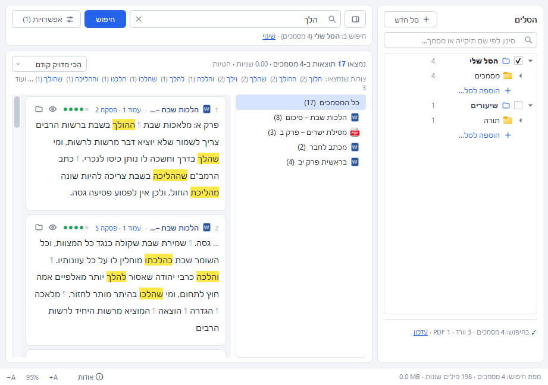
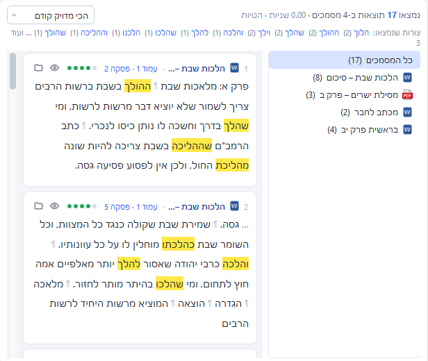

תוכנה למחשב · וורד ו-PDF
למצוא את המקום המדויק,
בתוך אלפי מסמכים
מקלידים מילה או כמה מילים, והתוכנה מחפשת בכל הקבצים שבחרתם. הניקוד, הגרשיים והאותיות הסופיות לא משנים, תחיליות והטיות נמצאות, ולחיצה על תוצאה פותחת את המסמך בדיוק במקום שנמצאה בו.
הורדה לחלונות 48.7MB מק או לינוקס
גרסה 1.0.3 · חלונות 10 ו-11, 64 ביט · בהפעלה הראשונה חלונות עשויה להציג אזהרה, ראו שאלות
חיפוש שמבין עברית
- ניקוד, טעמים וגרשיים
- אינם משנים. בְּרֵאשִׁית זהה לבראשית, ורש"י זהה לרש״י ולרשי. אותיות סופיות גם הן לא מפריעות.
- אותיות שימוש
- חיפוש של דרך מוצא גם בדרך, והדרך וכשבדרך. אפשר לכבות את זה.
- הטיות
- הלך מוצא הלכה, הליכה, הולכים, וילך, ללכת. זה קירוב ולא מילון, ולכן צורות חריגות כמו בית ובתים לא תמיד נמצאות.
- כתיב מלא וחסר
- שמרה מוצא גם שמירה ושומרה, כשהאפשרות פעילה.
- כמה מילים יחד
- קובעים כמה מילים מותר שיפרידו ביניהן (אפס הוא צמוד), האם הסדר חשוב, והאם מספיקות שלוש מתוך ארבע. אפשר לחפש עד שתים עשרה מילים בבת אחת.
- ביטוי מדויק
- שאילתה במירכאות, "איסור ייחוד", מחפשת את המילים צמודות ובסדר הזה, בלי קשר להגדרות. בנוסף יש כוכבית (הלכ*), סימן שאלה, או (משה|אהרן) ושלילה (שבת -חול).
סלים: ספרייה לכל נושא
סל הוא קבוצה בשם, למשל שיעורים או הלכה. מוסיפים אליו תיקיות שלמות, ותתי-התיקיות שבהן נכללות, או מסמכים בודדים. הסימון ליד שם הסל קובע אם מחפשים בו, ולחיצה כפולה מחפשת רק בו.
בתוך סל אפשר להחריג מסמך או תיקייה בלי להוציא את כל התיקייה, והמספר ליד התיקייה מראה כמה מסמכים נכללים. הוספה נעשית בחלון שפותח את עץ המחשב, או בגרירה מהסייר.

תוצאות, ופתיחה במקום
כל תוצאה היא קטע של ארבעים מילים, עשרים לפני ועשרים אחרי. המילים שנמצאו מסומנות בצהוב. ליד התוצאה כתוב שם המסמך, העמוד והפסקה, ובקובץ PDF העמוד והשורה.
הסדר הוא: קודם התוצאות שיש בהן כל המילים, ובהן הצמודות לפני המרוחקות, והצורה שהוקלדה לפני צורות עם תחילית או הטיה. מעל הרשימה מופיעות כל הצורות שנמצאו, ולחיצה על צורה מסננת לפיה.
לחיצה על תוצאה פותחת את המסמך. בחלונות עם וורד מותקן הוא נפתח בוורד, מגיע לשורה והמילים מסומנות. בקובץ PDF נפתח צופה מובנה בעמוד הנכון. בלי וורד, או במק ובלינוקס, נפתח מציג מובנה שגולל למקום.

מהירות
כל מסמך נקרא פעם אחת ונבנית ממנו מפה: לכל מילה, רשימה של המקומות שבהם היא מופיעה. אחר כך החיפוש עובד על המפה ולא על הקבצים, ולכן הוא מהיר גם בספרייה גדולה. כשמסמך משתנה או נוסף נקרא רק הוא.
| חיפוש | זמן |
|---|---|
| צירוף מדויק של חמש או שש מילים | 0.04 שניות |
| ארבע מילים, עד שלוש מילים ביניהן | 0.08 עד 0.1 שניות |
| "לפחות שלוש מתוך ארבע" | 0.05 עד 0.2 שניות |
| ארבע מהמילים הנפוצות ביותר (של, את, על, אשר) | כשנייה |
בניית המפה בפעם הראשונה: כ-15 שניות ל-800 מסמכים. הקריאה רצה ברקע בעדיפות נמוכה, והחלון נשאר זמין. בחיפוש ארוך מוצגים אחוזים וכפתור ביטול.
שימוש בתוכנה, דקה אחת
הורדה
גרסה 1.0.3. אין צורך להתקין פייתון או דבר נוסף, הכול כלול.
| מערכת | קובץ | גודל |
|---|---|---|
| חלונות 10 ו-11 (64 ביט) | HebDocSearch-Setup-1.0.3.exe | 48.7MB |
| מק, שבב Apple (M1 ומעלה) | HebDocSearch-1.0.3-macOS-arm64.dmg | 64.6MB |
| מק, אינטל | HebDocSearch-1.0.3-macOS-x86_64.dmg | 70.1MB |
| לינוקס (x86-64) | HebDocSearch-1.0.3-linux-x86_64.tar.gz | 153.9MB |
שאלות
- חלונות מציגה "Windows protected your PC"
- ההתקנה אינה חתומה בתעודה מסחרית. לוחצים "More info" ואחר כך "Run anyway". במק לוחצים על התוכנה בכפתור הימני, "Open", ושוב "Open".
- האם צריך וורד?
- לא. קובצי docx נקראים בלי וורד. וורד נחוץ רק לשני דברים בחלונות: לפתוח את המסמך בוורד עצמו, בשורה שנמצאה, ולקרוא קבצי doc ישנים.
- ומה עם PDF סרוק?
- אם אין בקובץ שכבת טקסט, אי אפשר לחפש בו. צריך קודם להעביר אותו זיהוי תווים (OCR), למשל באקרובט. תמיכה בזה אינה כלולה כעת.
- האם החיפוש מדויק בהטיות?
- הוא קירוב. התוכנה אינה משתמשת במילון, ולכן היא עלולה להחמיץ צורה חריגה או למצוא מילה אחרת שדומה באותיותיה. רשימת הצורות שנמצאו מעל התוצאות מאפשרת לראות מה נכלל ולסנן.
- כותרות עליונות ותחתונות
- אינן נכללות בחיפוש. גוף המסמך, טבלאות, תיבות טקסט, הערות שוליים והערות סיום נכללים.
- איפה נשמרים הסלים והמפה?
- בתיקיית הנתונים של המשתמש, בקובץ אחד. ההסרה בחלונות שואלת אם למחוק גם אותו.